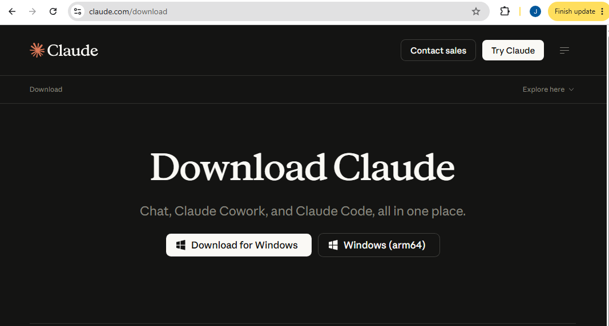
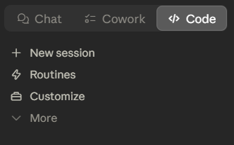
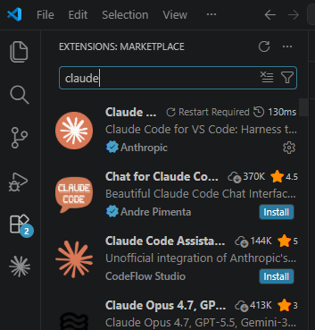
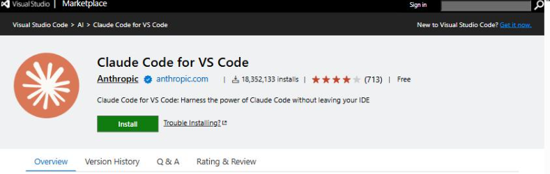
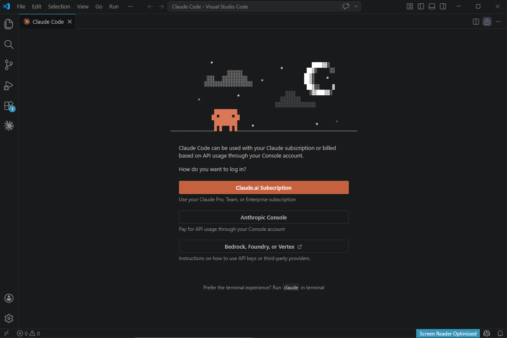
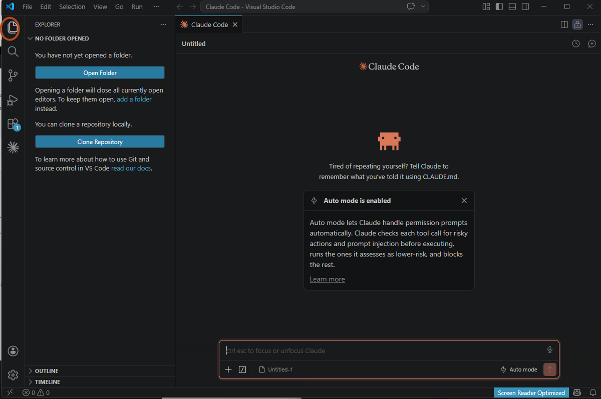
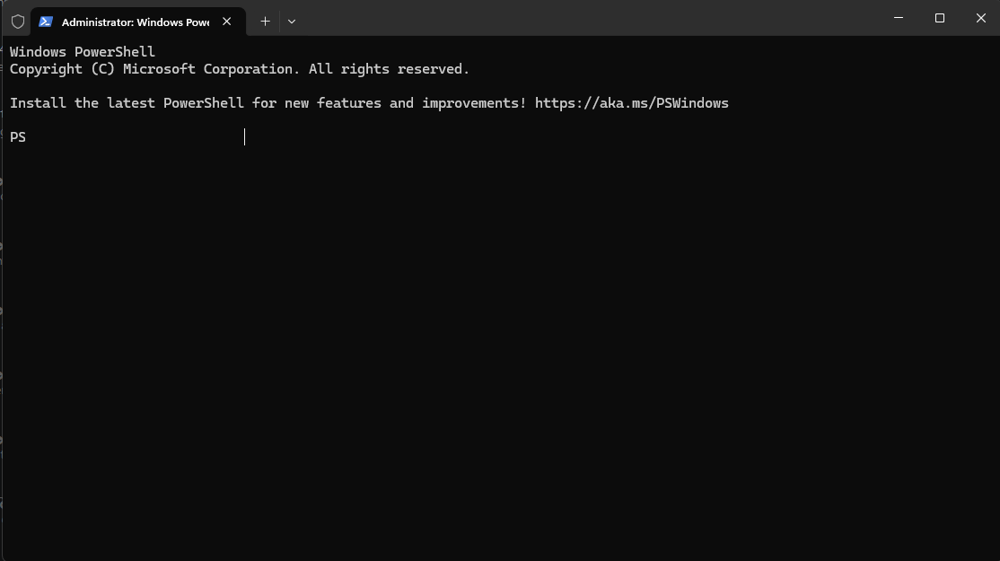
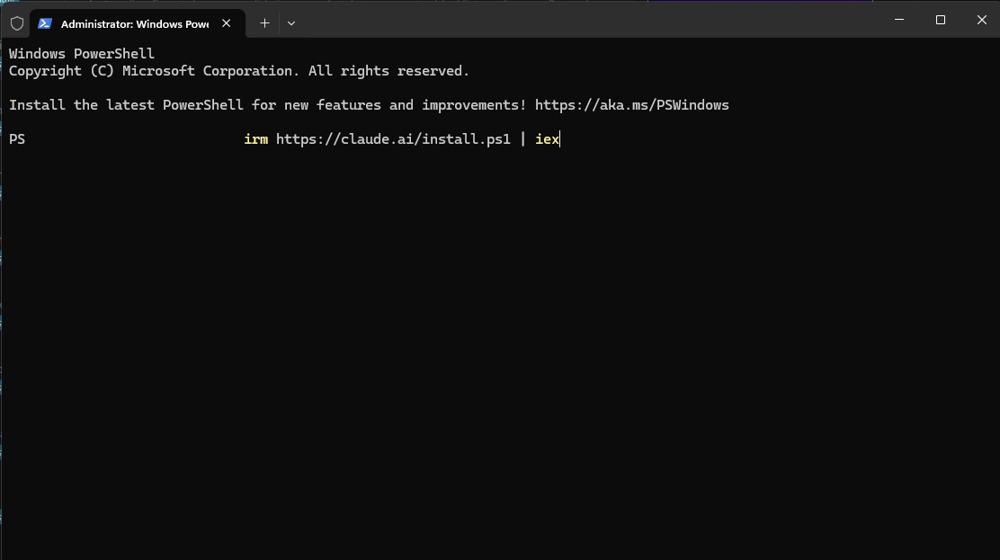
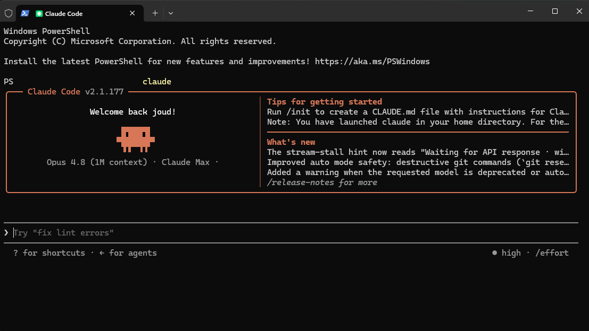

Claude Code är samma verktyg oavsett hur du öppnar det. Här är tre vägar in, från enklast till mest kraftfull: i Claude-appen, i VS Code och i terminalen. Allt steg för steg, för Windows och Mac. Välj det sätt som passar dig, du behöver bara ett.
Innan du börjar: Claude Code ingår i en betald Claude-plan. Billigaste vägen in är Pro, runt 200 kr i månaden, vilket räcker gott för allt i den här guiden. Det finns även större planer (Max, Team, Enterprise), och i terminalen och VS Code funkar ett Claude Console-konto där du betalar per användning.
En vanlig app på datorn med knappar och fönster. Inget krångel i terminalen.
Claude Code som panel direkt i din kodeditor, bredvid filerna du jobbar i.
Kommandoraden. Mest kraftfull, alla kommandon, och går att skripta.
Gå till nedladdningssidan och hämta appen för ditt system. Sidan känner oftast av om du har Windows eller Mac.
Ladda ner Claude-appen
Windows
Kör filen som laddades ner (.exe) och följ stegen. Starta sen Claude från Startmenyn.
Mac
Öppna .dmg-filen och dra Claude till mappen Program. Öppna Claude därifrån.
Logga in med ditt Claude-konto. Det krävs en betald plan, och Pro (runt 200 kr i månaden) räcker. Ser du "Upgrade required" behöver du uppgradera.
Längst upp finns tre flikar: Chat, Cowork och Code. Tryck på Code.

Tryck på Select folder och välj mappen för ditt projekt. Skriv sen i rutan:
vad gör det här projektet?
Claude läser dina filer och sammanfattar projektet. Tips: skriv / i rutan för att se alla kommandon.
Ladda ner och installera VS Code för Windows eller Mac.
Ladda ner VS CodeI VS Code, tryck Ctrl+Shift+X (Mac: Cmd+Shift+X) för att öppna Extensions. Sök på claude, välj "Claude Code" från Anthropic och tryck Install.

Eller installera direkt från Marketplace:
Öppna tillägget i Marketplace
Öppna Claude-panelen genom att trycka på stjärnikonen i vänstra listen. Skriv /login i panelen och tryck Enter, då dyker inloggningen upp. Välj Claude.ai Subscription och logga in i webbläsaren som öppnas.

Tryck på Explorer-ikonen (inringad nedan). Den sitter överst i den smala ikonraden längst till vänster och ser ut som två papper som ligger omlott. Tryck sen på Open Folder, skapa en ny mapp, döp den och välj den. Det blir din arbetsyta.

Nu är du igång. Skriv vad du vill bygga i panelen, till exempel:
skapa en enkel hemsida med en rubrik och en knapp
Skriv @filnamn för att peka på en viss fil, och / för att se alla kommandon.
Windows
Öppna Startmenyn, sök på Terminal eller PowerShell, och öppna den. Ett fönster med en textrad dyker upp.
Mac
Tryck Cmd+Mellanslag, skriv Terminal och tryck Enter.

Anthropic rekommenderar installeraren nedan, den uppdaterar sig själv. Kör raden som matchar ditt system.
Windows (PowerShell)
irm https://claude.ai/install.ps1 | iex

Mac (och Linux)
curl -fsSL https://claude.ai/install.sh | bash
Öppna en ny terminal och kör:
claude --version
Du ska få ett versionsnummer. Står det "command not found", stäng och öppna terminalen igen så att den hittar programmet.
Kör claude. Första gången öppnas webbläsaren där du loggar in. Sen är du inloggad och slipper göra om det.
claude
Gå till mappen för projektet och starta Claude där:
cd sokvag/till/ditt/projekt claude
Skriv sen din fråga, till exempel vad gör det här projektet?

/init skapar en CLAUDE.md med regler för projektet. /help visar allt. Shift+Tab slår på planläget (Claude planerar innan den ändrar). /clear rensar chatten. /exit avslutar.
| Appen | VS Code | Terminalen | |
|---|---|---|---|
| Svårighetsgrad | Lättast | Lätt | Mer van |
| Visar ändringar visuellt | Ja | Ja | Som text |
| Alla kommandon | De flesta | De flesta | Alla |
| Automatisera med skript | Nej | Begränsat | Ja |
| Bäst för | Nybörjare | Börja bygga | Full kontroll |
VS Code har ett enkelt gränssnitt och funkar bra även om du inte kodar. Att det står "Begränsat" på skript och automation märker du inte som nybörjare, det räcker mer än väl för att börja bygga. Vill du skripta och automatisera på allvar senare gör du det i terminalen.
Allt du ställer in på ett ställe (CLAUDE.md, MCP-verktyg, skills) funkar på alla tre sätten. Börja med det enklaste och byt när du vill.
Nu kan du installera och starta Claude Code på tre sätt. Det är längre än de allra flesta kommer, så du ligger redan före. Men var ärlig mot dig själv, det här är en startguide.
Nästa steg är att lära dig jobba smart med Claude: skapa en CLAUDE.md som ger den regler för ditt projekt, och bygg upp en tydlig filstruktur. Fortsätt testa och bygg vidare, så lär du dig resten på vägen.
Jag visar hur du använder AI i ditt jobb och företag, från första frågan till färdig rutin. Skriv till mig så snackar vi.
Skriv till mig på Instagram